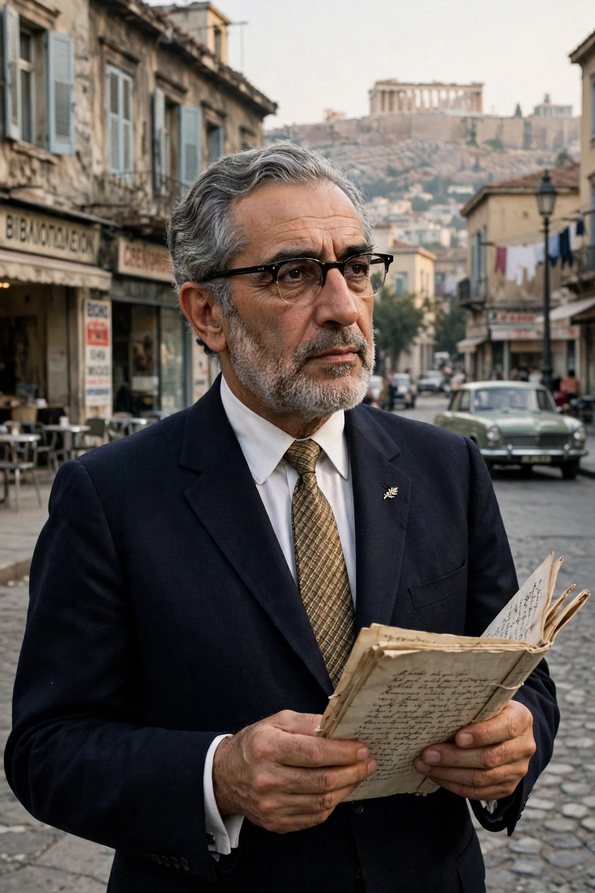

Giorgos Seferis (born Georgios Seferiades; March 13 [O.S. February 29], 1900 – September 20, 1971) was a Greek poet, essayist and diplomat, one of the most important Greek writers of the 20th century. In 1963 he became the first Greek to win the Nobel Prize in Literature, awarded for his lyric poetry inspired by the Hellenic world and Greek cultural experience.
| Giorgos Seferis | |
|---|---|
| Born | 1900, Smyrna, Ottoman Empire |
| Died | 1971, Athens, Greece |
| Occupation | Poet, diplomat |
| Notable works | Mythistorema (1935); Logbook volumes |
| Award | Nobel Prize in Literature (1963) |
Seferis was born in Smyrna (now İzmir) and left with his family before the catastrophe of 1922 destroyed Greek Smyrna — a loss that haunts his poetry's themes of exile and broken continuity. He studied law in Paris, entered the Greek foreign service in 1926, and served in London, Albania, wartime exile postings in Egypt and South Africa, Lebanon, and finally as ambassador to the United Kingdom (1957–1962).
His landmark collection Mythistorema (1935) retells the Odyssey as a modern voyage through a fragmented Greek world, blending demotic speech, myth and the influence of T. S. Eliot and Ezra Pound, whom he translated. Later volumes include the Logbooks and poems on Cyprus, where he found a Hellenism still alive. His diaries and essays are major prose works in their own right.
In 1969 Seferis publicly denounced the military junta ruling Greece, a statement widely broadcast abroad; his funeral in 1971 became a mass demonstration of resistance. His poems have been set to music by composers such as Mikis Theodorakis and are woven into modern Greek life.
See also: Odysseas Elytis · Modern Greek literature